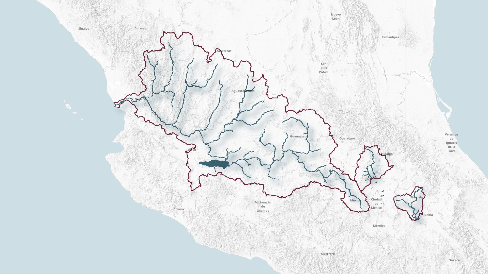

Promesa 92 de la presidenta · Plan de acción 2025–2026
Tres cuencas estratégicas en proceso de saneamiento, restauración y recuperación hídrica para las comunidades que dependen de ellas.

La Secretaría de Medio Ambiente y Recursos Naturales impulsa la recuperación de tres de los ríos más afectados del país: el Atoyac, el Lerma-Santiago y el Tula. En conjunto suman más de 90 proyectos de infraestructura, monitoreo y restauración activos en 2025 y 2026.
Saneamiento de las descargas domésticas e industriales en la cuenca alta, revegetación de riberas y conservación de más de 15,000 ha de bosque.
Mejora de la calidad del agua, restauración de las ciénegas de Lerma, recuperación del humedal El Ahogado y reforestación de la cuenca alta.
Plan integral de saneamiento, prevención de inundaciones y restauración ecológica en los 30 km del tramo urbano del río Tula y sus afluentes.